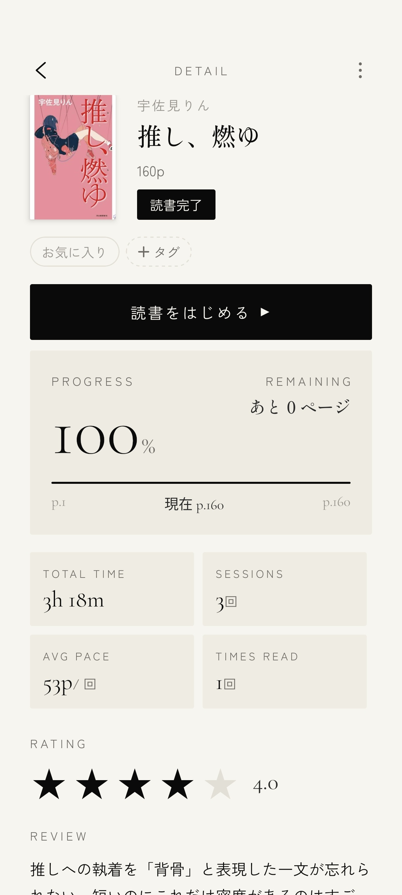

読書の記録を、
しおりのように。
紙の本の「どこまで読んだか忘れた」をなくす、静かな読書記録アプリ。 書籍情報の自動取得から、進捗の記録、読書時間の計測、読了予測まで。 あなたの読書を、次のページへ。
無料ではじめるiOS / Android アプリは近日公開

書籍のように、静謐に。
派手な通知も、過剰な装飾もありません。色はすべて本の表紙にゆだね、 数字は書籍のページ番号のように堂々と。読書体験と地続きの、 使っていることを意識させない道具を目指しました。
できること
書影が並ぶ、デジタルの本棚
タイトルで検索するだけで、表紙・著者・ページ数を自動取得。手元の紙の本が、数秒で美しい本棚に並びます。
どこまで読んだか、忘れない
現在のページを記録すれば、進捗率と残りページを常に表示。栞を失くしても、読書の現在地は失われません。
没入のための、読書タイマー
読書をはじめたら、タイマーをそっと起動。黒い画面が集中を守り、読んだ時間とページを静かに記録します。
「あと何分で読み終わるか」
あなた自身の読書ペースから、読了までの残り時間を予測。次の読書時間の計画が立てやすくなります。
積み重ねが見える、読書手帖
累計読書時間、読了冊数、読んだページ数、連続読書日数。あなたの読書が、確かな記録として残ります。
メモ・評価・タグで、自分だけの書斎に
心に残った一文のメモ、読み終えた本の評価とレビュー、タグでの整理。再読の記録にも対応しています。
画面
LIBRARY
本棚
書影のグリッドと読書中の本

DETAIL書籍詳細
進捗と読書の現在地
 NOW READING
NOW READING
読書タイマー
没入の黒い画面
 STATS
STATS
読書手帖
積み重ねの統計
もっと読む人のために
基本機能はすべて無料でお使いいただけます。本棚の冊数やタグ、 セッション履歴を無制限にし、統計を全期間さかのぼれる Yondle Pro もご用意しています。
あなたの読書を、次のページへ。
メールアドレスだけで登録できます
無料ではじめる